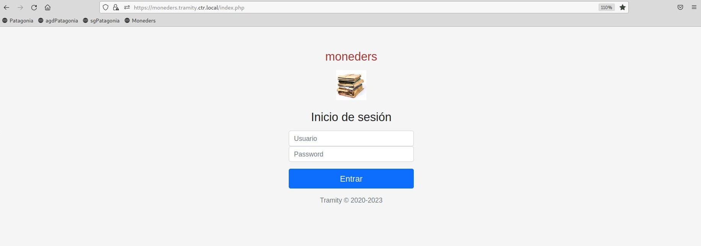
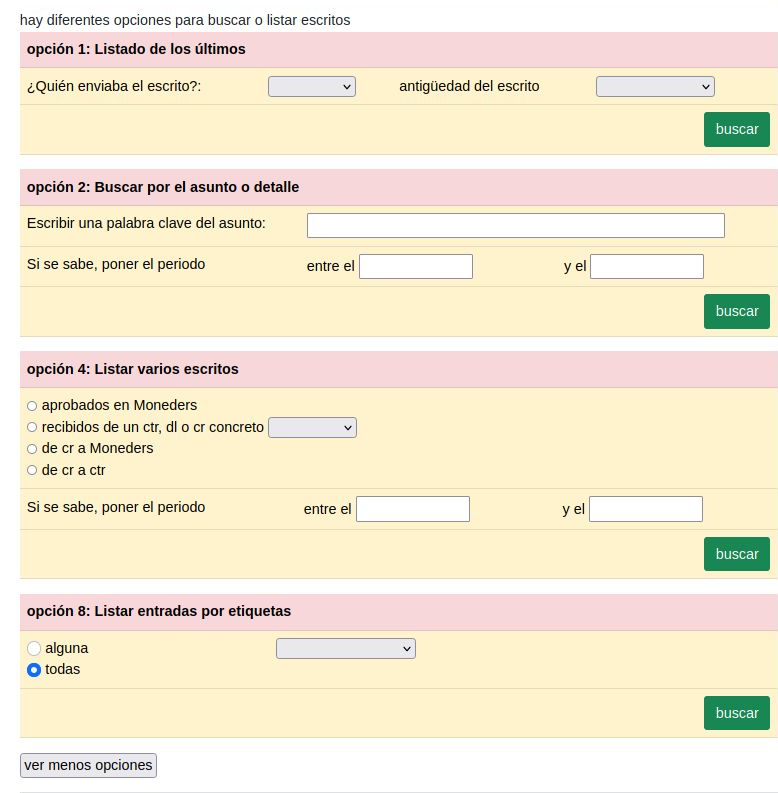
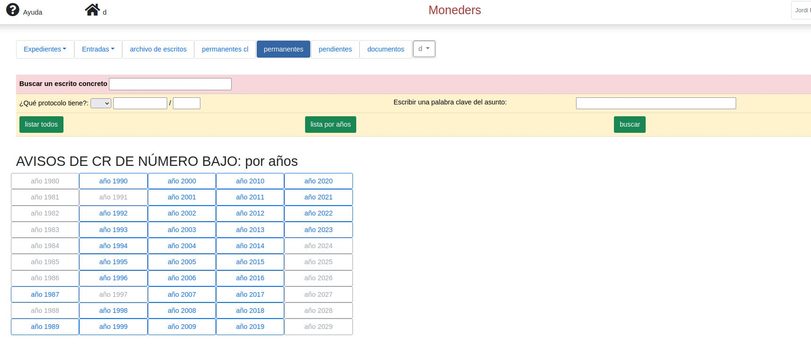

La versión simplificada de Tramity ("Tramity-correo") se limita a enviar y recibir correo, además de la búsqueda de escritos (también los permanentes) y los avisos de pendientes señalados por la dl.
Cómo acceder (dentro del
escritorio remoto)
1. Abrir el navegador Firefox y esciribr la siguiente dirección:
https://MICENTRO.tramity.ctr.local/index.php (sin mayúsculas ni acentos);
2. Aparece:

3. Se accede con el usuario y contraseña personal.
Si hasta ahora se ha trabajado con la versión completa de Tramity, hay que cambiar las preferencias para que abra la versión simplificada, con los siguientes pasos:
- acceder a Tramity con el usuario "admin" y la contraseña correspondiente que se facilitó en su momento. Si no se conserva, se puede volver a pedir al scdl, o que él mismo haga el cambio de versión.
- En el panel azul que aparece a la izquierda ir a "Parámetros" ->"Parámetros"
- Bajar al final de la página, al título "Ámbito de la entidad: centro,delegación, comisión regional"
- Estará marcado "centro". Seleccionar "ctr-correo" y pulsar"guardar"
- En el panel azul de la izquierda pulsar "Salir"
Se accede a la siguiente ventana:
De arriba a abajo y de izquierda a derecha:
- Ayuda: manual de ayuda
- Casa / Home: para volver a esta páginaprincipal
- Nombre (desplegable): para definir preferencias, o Salir de Tramity
- Botón "Escritos": para enviar
- Botón "Entradas": escritos recibidos de la Delegación
- Botón "Archivo de escritos":para buscar escritos
- Botón "Permanentes": escritos permanentes de cr
- Botón "Pendientes": gestión de pendientes (opcional).
-Zona inferior:Recordatorio de pendientes de respuesta a la Delegación
1. Clicar en la pestaña "Entradas".
2. Con el botón azul "Revisar dock" descargar las entradas dirigidas al Centro: quedan añadidas a las actuales.
1. Clicar en la pestaña "Escritos"
2. Clicar el botón azul "Nuevo escrito"
3. Rellenar los campos: "Destino", "Referencias" (si las hay), "Asunto" (es el nombre que se envía a la Delegación), "Detalle" (no se envía a la Delegación) y "Fecha del escrito"
4. Al pulsar "Guardar" preguntará si se quieren añadir escritos o adjuntos.
5. Si se responde que "sí" se abrirá una pantalla con un espacio a la derecha donde se permite arrastrar ficheros. Este espacio está previsto para los "adjuntos" que se quieren enviar junto con el texto del escrito.
5. Para introducir el texto del escrito hay que pulsar "Nuevo" en Insertar Etherpad, y se abrirá el editor de textos.
6. Una vez acabada la redacción del escrito, se cierra la ventana ("aspa" esquina superior derecha) y se vuelve a la ventana anterior. Hay que clicar en el botón azul "Guardar" y avisa:
7. Se va de nuevo a la pestaña "Escritos" donde aparece el escrito preparado y hay que clicar "enviar" (también se puede "eliminar").
8. El escrito enviado quedará añadido al listado de enviados.
Para consultar los escritos permanentes de cr -de numeración baja- (y algunos de la dl)
Ver explicación detallada al final
Hay 2 maneras de buscar un escrito (tanto de entrada como de salida):
y pulsar el botón “buscar”.
Además, pulsando en el botón “ver todas las opciones” se abren más posibilidades de búsqueda:

El resultado de una búsqueda se ve así:

Como en otras pantallas similares, si se marca un escrito, permite usar los siguientes botones:
“detalle”: modificar / introducir el “detalle” del escrito, según interese
“ver” y “acción”: es lo mismo que para la vista de “Para distribuir”
Los botones negros actúan sobre la lista entera de escritos que vemos en la pantalla:
“Copy”: copia la lista, para poder pegarla en un documento
“Excel” y “PDF”: Exportan la lista en estos formatos
“Column visibility”: permite seleccionar qué columnas se quieren ver en la lista
“Print”: Imprime la lista
Relación de los escritos de cr de numeración baja (u otros permanentes). Tiene una apariencia similar a la opción “Entradas recientes” de la pestaña “Entradas”:

Permite la búsqueda de un escrito por protocolo, por años o por palabras clave.
Barcelona, 14 de enero de 2024